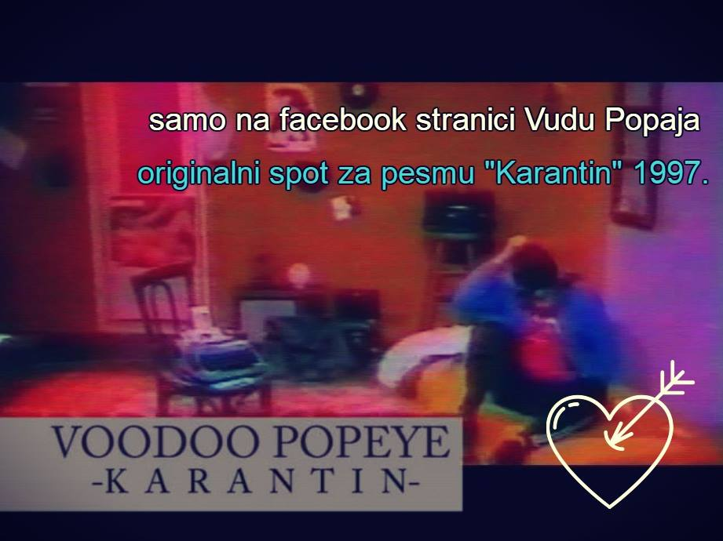
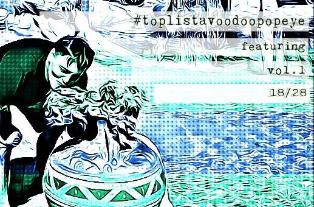

„Karantin“ — originalni spot
Samo na Facebook stranici: originalni spot za pesmu „Karantin“ iz 1997. godine.
Otvori na Facebook-u →
Official video · 2018 · 77 Music
Zvanični spot za pesmu „Gluma i laž“. Muzika Red String i Vlada Bojić, miks i mastering u BissMusic studiju u Štutgartu.

Samo na Facebook stranici: originalni spot za pesmu „Karantin“ iz 1997. godine.
Otvori na Facebook-u →
Iz kolekcije Saradnje i singlovi, vol. 1 — numera 18 od 28. #toplistavoodoopopeye
Otvori na Facebook-u →
Prvi album 700 rsd, ostali albumi 400 rsd, majice 600 rsd. Originalna kaseta prvog albuma — 350 rsd. Sve može sa posvetom.
U prodavnicu →